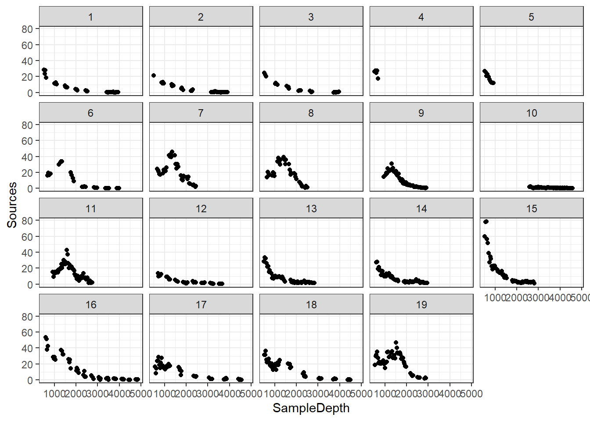
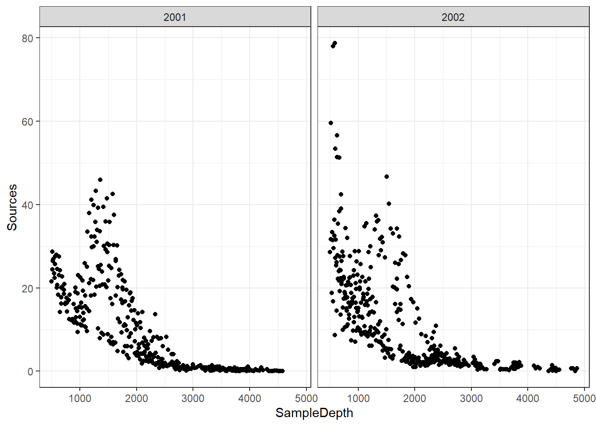
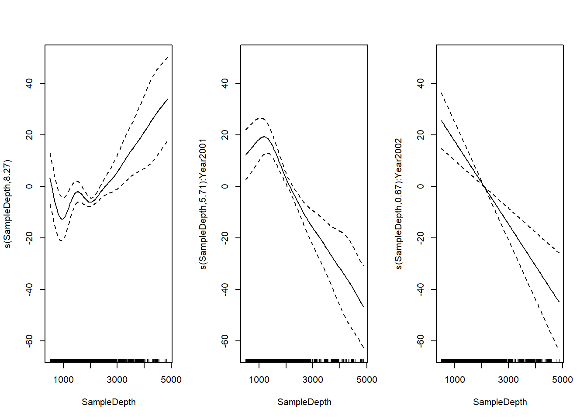
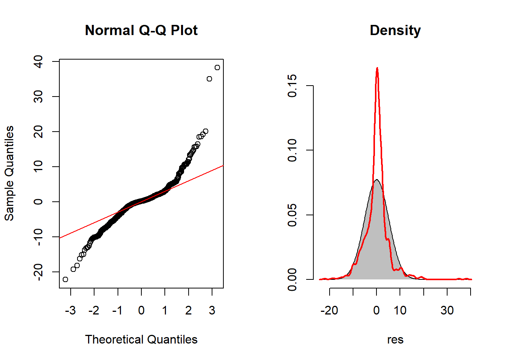
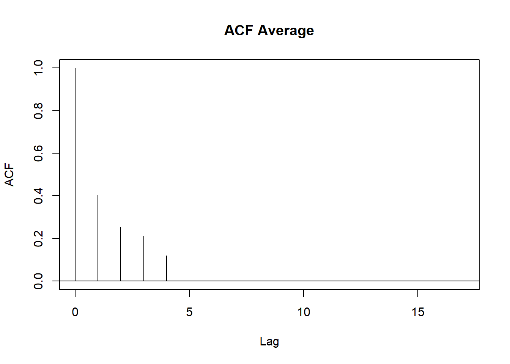
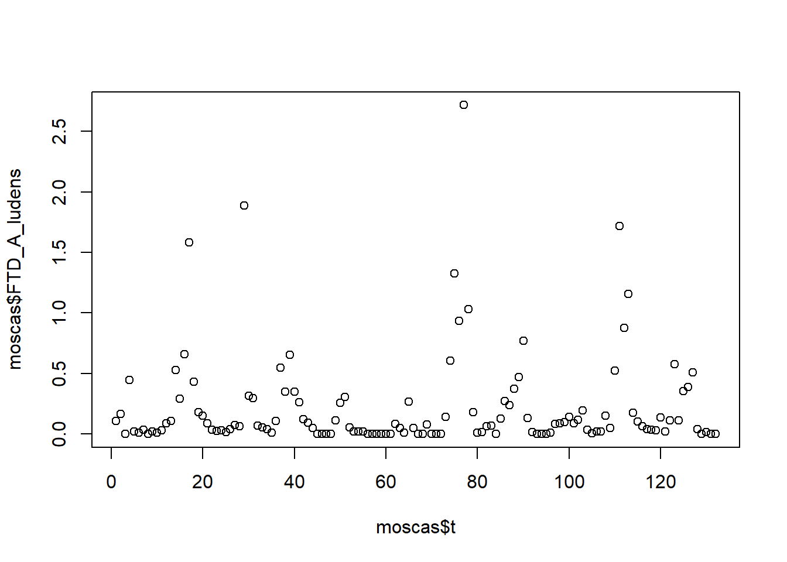
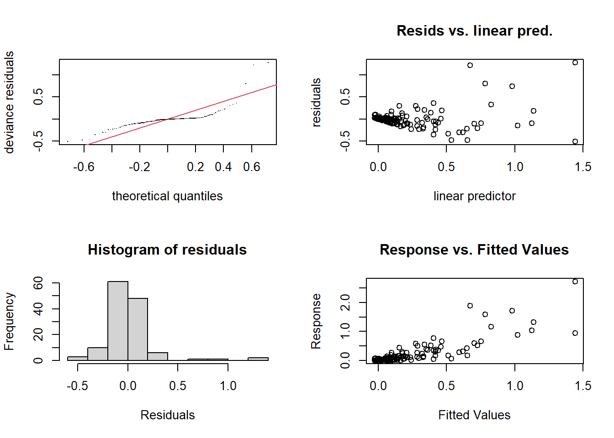
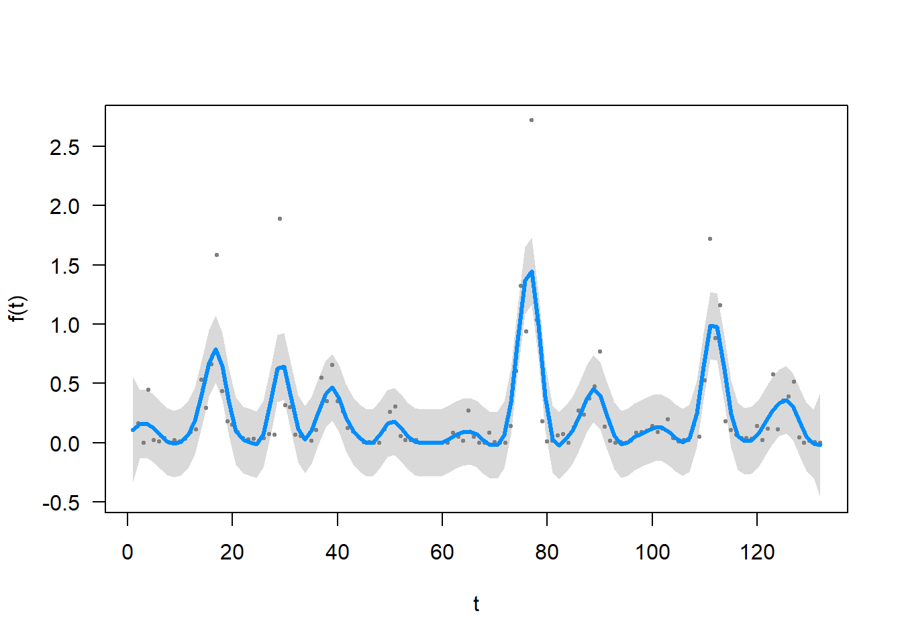
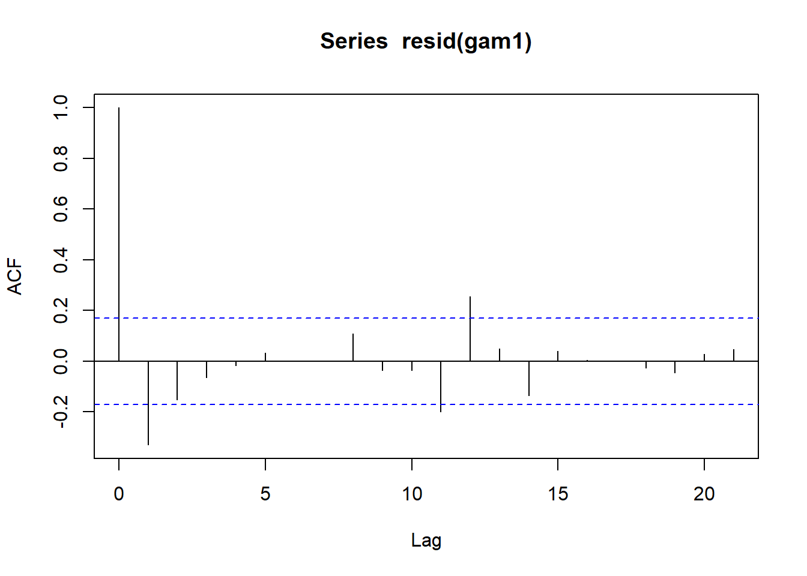
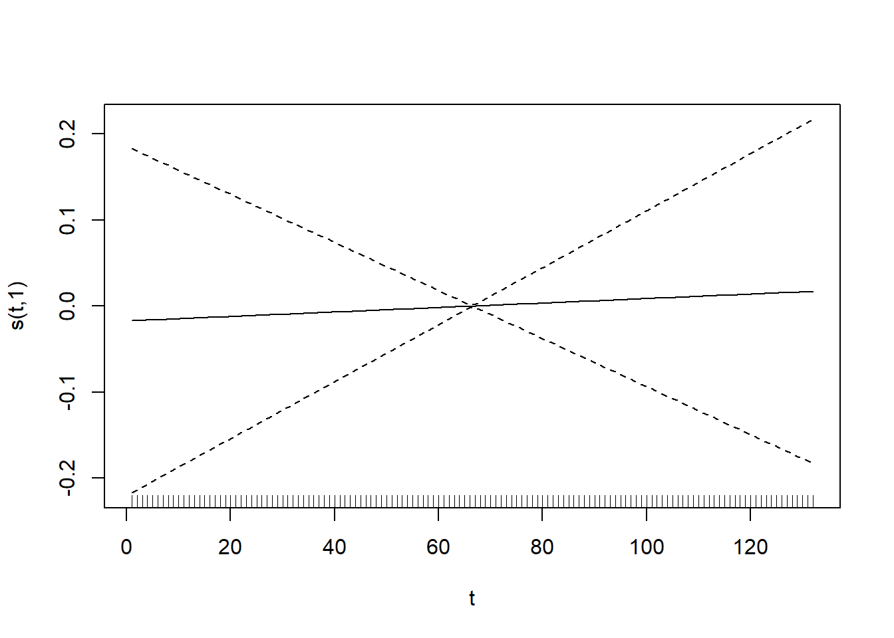

4 Modelos mixtos
4.1 Dependencia temporal
set.seed(101)
tiempo <- seq(1, 20, length = 30)
a <- 20
b <- 5
c <- 0.3
peso <- a - (a - b)*exp(-c*tiempo) + rnorm(n = 30, mean = 0, sd = 0.5)
plot(tiempo, peso)
# Gráfico de residuos
m.crec <- lm(log(peso) ~ log(tiempo))
plot(log(tiempo), log(peso))
abline(m.crec, lwd = 2, col = "blue")
4.2 Dependencia espacial
Ubicación (coordenadas) y concentración de metales pesados en el río Mosa (Europa).
library(sp)
library(gstat)
library(ggplot2)
data(meuse)
coordinates(meuse) = ~x+y
bubble(meuse, "zinc", col = "#00ff0088", main = "zinc concentrations (ppm)")
m.espacial <- lm(zinc ~ x + y, data = meuse)
plot(meuse$x, resid(m.espacial))
abline(a = 0, b = 0, lty = 2)

data(meuse)
meuse$residuos <- resid(m.espacial)
ggplot(meuse, aes(x = x, y = y, col = residuos)) +
geom_point(size = 4) +
scale_color_gradient(low = "yellow", high = "red")
# Semivariograma
coordinates(meuse) = ~x+y
zinc.variog <- variogram(zinc ~ 1, meuse)
plot(zinc.variog)
4.3 Introducción a los modelos mixtos
A partir de 8 plantas, se contaron el número de flores en 3 inflorescencias por planta y se midió la longitud de los pedicelos. Analizar la relación entre la longitud del pedicelo y el número de flores/inflorescencia.
id <- factor(sort(rep(1:8, 3)))
long.pedicelo <- c(1, 1.3, 1.4, 2, 2.2, 2.1, 2.9, 3, 2.8, 3.5, 3.4, 3.7,
4.5, 4.7, 4.7, 5.5, 5.7, 6, 7.2, 7.3, 7.5, 8.4, 8.8, 8.6)
nflores <- c(2, 2, 3, 4, 5, 4, 5, 6, 7, 8, 7, 10, 10, 12, 11, 11, 13, 12,
13, 11, 14, 14, 17, 15)
plantas <- data.frame(id, long.pedicelo, nflores)
plantas## id long.pedicelo nflores
## 1 1 1.0 2
## 2 1 1.3 2
## 3 1 1.4 3
## 4 2 2.0 4
## 5 2 2.2 5
## 6 2 2.1 4
## 7 3 2.9 5
## 8 3 3.0 6
## 9 3 2.8 7
## 10 4 3.5 8
## 11 4 3.4 7
## 12 4 3.7 10
## 13 5 4.5 10
## 14 5 4.7 12
## 15 5 4.7 11
## 16 6 5.5 11
## 17 6 5.7 13
## 18 6 6.0 12
## 19 7 7.2 13
## 20 7 7.3 11
## 21 7 7.5 14
## 22 8 8.4 14
## 23 8 8.8 17
## 24 8 8.6 15plot(plantas$long.pedicelo, plantas$nflores, pch = 19, cex = 2,
xlab = "Longitud del pedicelo", ylab = "Número de flores")# Opción 1: asumimos que las observaciones son independientes
m1 <- lm(nflores ~ long.pedicelo, data = plantas)
summary(m1)##
## Call:
## lm(formula = nflores ~ long.pedicelo, data = plantas)
##
## Residuals:
## Min 1Q Median 3Q Max
## -2.7697 -0.9116 -0.1089 0.7718 2.6725
##
## Coefficients:
## Estimate Std. Error t value Pr(>|t|)
## (Intercept) 1.2973 0.5926 2.189 0.0395 *
## long.pedicelo 1.7085 0.1159 14.739 6.99e-13 ***
## ---
## Signif. codes: 0 '***' 0.001 '**' 0.01 '*' 0.05 '.' 0.1 ' ' 1
##
## Residual standard error: 1.368 on 22 degrees of freedom
## Multiple R-squared: 0.908, Adjusted R-squared: 0.9039
## F-statistic: 217.2 on 1 and 22 DF, p-value: 6.986e-13# Opción 2: una media por unidad
xlong.pedicelo <- tapply(long.pedicelo, id, mean)
xnflores <- tapply(nflores, id, mean)
plot(xlong.pedicelo, xnflores, pch = 19, cex = 2)##
## Call:
## lm(formula = xnflores ~ xlong.pedicelo)
##
## Residuals:
## Min 1Q Median 3Q Max
## -1.1378 -0.7432 -0.4178 0.9354 1.7874
##
## Coefficients:
## Estimate Std. Error t value Pr(>|t|)
## (Intercept) 1.3328 0.8834 1.509 0.182
## xlong.pedicelo 1.7007 0.1729 9.837 6.36e-05 ***
## ---
## Signif. codes: 0 '***' 0.001 '**' 0.01 '*' 0.05 '.' 0.1 ' ' 1
##
## Residual standard error: 1.176 on 6 degrees of freedom
## Multiple R-squared: 0.9416, Adjusted R-squared: 0.9319
## F-statistic: 96.78 on 1 and 6 DF, p-value: 6.359e-05# Opción 3: incluir el efecto de la unidad
m3 <- lm(nflores ~ long.pedicelo + id, data = plantas)
summary(m3)##
## Call:
## lm(formula = nflores ~ long.pedicelo + id, data = plantas)
##
## Residuals:
## Min 1Q Median 3Q Max
## -1.5294 -0.4657 -0.1177 0.6667 1.4118
##
## Coefficients:
## Estimate Std. Error t value Pr(>|t|)
## (Intercept) -2.745 1.832 -1.498 0.1548
## long.pedicelo 4.118 1.417 2.907 0.0108 *
## id2 -1.569 1.454 -1.079 0.2977
## id3 -3.196 2.486 -1.286 0.2181
## id4 -3.471 3.350 -1.036 0.3166
## id5 -5.333 4.879 -1.093 0.2916
## id6 -8.863 6.422 -1.380 0.1878
## id7 -14.784 8.677 -1.704 0.1090
## id8 -17.333 10.465 -1.656 0.1184
## ---
## Signif. codes: 0 '***' 0.001 '**' 0.01 '*' 0.05 '.' 0.1 ' ' 1
##
## Residual standard error: 0.9538 on 15 degrees of freedom
## Multiple R-squared: 0.9695, Adjusted R-squared: 0.9533
## F-statistic: 59.68 on 8 and 15 DF, p-value: 5.532e-10# Opción 4: modelo mixto de intercepto aleatorio
library(lme4)
library(lmerTest)
m4 <- lmer(nflores ~ long.pedicelo + (1|id), data = plantas)
summary(m4)## Linear mixed model fit by REML. t-tests use Satterthwaite's method ['lmerModLmerTest']
## Formula: nflores ~ long.pedicelo + (1 | id)
## Data: plantas
##
## REML criterion at convergence: 79.4
##
## Scaled residuals:
## Min 1Q Median 3Q Max
## -1.8940 -0.4662 -0.1966 0.4627 1.6150
##
## Random effects:
## Groups Name Variance Std.Dev.
## id (Intercept) 1.050 1.025
## Residual 1.015 1.007
## Number of obs: 24, groups: id, 8
##
## Fixed effects:
## Estimate Std. Error df t value Pr(>|t|)
## (Intercept) 1.1887 0.8804 6.0833 1.35 0.225
## long.pedicelo 1.7326 0.1720 6.1198 10.07 4.91e-05 ***
## ---
## Signif. codes: 0 '***' 0.001 '**' 0.01 '*' 0.05 '.' 0.1 ' ' 1
##
## Correlation of Fixed Effects:
## (Intr)
## long.pedicl -0.881## $id
## (Intercept)
## 1 -0.7505424
## 2 -0.3735793
## 3 -0.1613717
## 4 0.7734991
## 5 1.3489226
## 6 0.6637327
## 7 -0.9288334
## 8 -0.5718278
##
## with conditional variances for "id"## ANOVA-like table for random-effects: Single term deletions
##
## Model:
## nflores ~ long.pedicelo + (1 | id)
## npar logLik AIC LRT Df Pr(>Chisq)
## <none> 4 -39.679 87.357
## (1 | id) 3 -42.174 90.349 4.9912 1 0.02548 *
## ---
## Signif. codes: 0 '***' 0.001 '**' 0.01 '*' 0.05 '.' 0.1 ' ' 1long.pedicelo.new <- seq(min(plantas$long.pedicelo), max(plantas$long.pedicelo), length = 100)
newdata <- expand.grid(long.pedicelo.new, plantas$id)
colnames(newdata) <- c("long.pedicelo", "id")
newdata$predy.fixed <- predict(m4, newdata = newdata, re.form = NA)
newdata$predy.rand <- predict(m4, newdata = newdata, re.form = NULL)
ggplot(data = plantas, aes(x = long.pedicelo, y = nflores, col = id)) +
geom_point(size = 2) +
geom_line(data = newdata, aes(x = long.pedicelo, y = predy.rand)) +
geom_line(data = newdata, aes(x = long.pedicelo, y = predy.fixed), col = "black", size = 2) + ggtitle("Modelo de intercepto aleatorio") +
xlab("Longitud del pedicelo") + ylab("Numero de flores") +
theme_bw()
# Opción 5: modelo mixto de intercepto y pendiente aleatorios
m5 <- lmer(nflores ~ long.pedicelo + (long.pedicelo|id), data = plantas)## boundary (singular) fit: see ?isSingular## Linear mixed model fit by REML. t-tests use Satterthwaite's method ['lmerModLmerTest']
## Formula: nflores ~ long.pedicelo + (long.pedicelo | id)
## Data: plantas
##
## REML criterion at convergence: 77.1
##
## Scaled residuals:
## Min 1Q Median 3Q Max
## -1.8626 -0.5465 -0.1193 0.5507 1.6903
##
## Random effects:
## Groups Name Variance Std.Dev. Corr
## id (Intercept) 0.8215 0.9064
## long.pedicelo 0.1895 0.4353 -1.00
## Residual 0.9006 0.9490
## Number of obs: 24, groups: id, 8
##
## Fixed effects:
## Estimate Std. Error df t value Pr(>|t|)
## (Intercept) 0.03828 0.66573 5.38487 0.057 0.956222
## long.pedicelo 2.08596 0.21792 4.77122 9.572 0.000271 ***
## ---
## Signif. codes: 0 '***' 0.001 '**' 0.01 '*' 0.05 '.' 0.1 ' ' 1
##
## Correlation of Fixed Effects:
## (Intr)
## long.pedicl -0.889
## convergence code: 0
## boundary (singular) fit: see ?isSingular## $id
## (Intercept) long.pedicelo
## 1 -0.20606623 0.098969626
## 2 -0.02342207 0.011249167
## 3 0.10951121 -0.052596116
## 4 -0.82313657 0.395336576
## 5 -0.86260770 0.414293794
## 6 0.00184916 -0.000888116
## 7 0.99686885 -0.478776830
## 8 0.80700335 -0.387588101
##
## with conditional variances for "id"## ANOVA-like table for random-effects: Single term deletions
##
## Model:
## nflores ~ long.pedicelo + (long.pedicelo | id)
## npar logLik AIC LRT Df Pr(>Chisq)
## <none> 6 -38.527 89.054
## long.pedicelo in (long.pedicelo | id) 4 -39.679 87.357 2.303 2 0.3162newdata$predy.fixed <- predict(m5, newdata = newdata, re.form = NA)
newdata$predy.rand <- predict(m5, newdata = newdata, re.form = NULL)
ggplot(data = plantas, aes(x = long.pedicelo, y = nflores, col = id)) +
geom_point(size = 2) +
ggtitle("Modelo de intercepto y pendiente aleatorios") +
geom_line(data = newdata, aes(x = long.pedicelo, y = predy.rand)) +
geom_line(data = newdata, aes(x = long.pedicelo, y = predy.fixed), col = "black", size = 2) +
xlab("Longitud del pedicelo") + ylab("Numero de flores") +
theme_bw()
4.4 Un caso especial
library(data.table)
library(nlme)
url <- "https://raw.githubusercontent.com/hauselin/rtutorialsite/master/data/simpsonsParadox.csv"
df <- fread(url)
head(df)## iq grades class
## 1: 94.5128 67.9295 a
## 2: 95.4359 82.5449 a
## 3: 97.7949 69.0833 a
## 4: 98.1026 83.3141 a
## 5: 96.5641 99.0833 a
## 6: 101.5897 89.8526 a
model.class <- lme(iq ~ grades, random = ~1|class, data = df)
predy.fixed <- predict(model.class, level = 0)
ggplot(df, aes(grades, iq, col = class)) + geom_point(size = 2.5) +
ggtitle("Paradoja de Simpson") +
geom_smooth(method = "lm", se = FALSE) +
geom_line(data = data.frame(x = df$grades, y = predy.fixed), aes(x, y), col = "black", size = 3) +
theme_bw()## `geom_smooth()` using formula 'y ~ x'
4.5 Modelos lineales generalizados mixtos
Palacio et al. (2014) estudiaron la selección natural mediada por aves frugívoras sobre rasgos de los frutos de Celtis tala (frutos Celtis 2013.txt), incluyendo el diametro (diam), peso (peso), concentración de azúcares (az), peso de pulpa (pulpa), peso de semilla (sem) y relación peso de pulpa/peso de semilla (pulpa.sem). Para esto se midieron 4-10 frutos por árbol en 24 árboles y 4 parches de bosque.
4.5.0.1 Diseño anidado
library(glmmTMB)
library(lme4)
library(MuMIn)
library(sjPlot)
library(equatiomatic)
celtis <- read.delim("frutos Celtis 2013.csv", sep = ";")
table(celtis$planta)##
## D1-145 D1-146 D1-147 D1-148 P1-10 P1-11 P1-12 P1-13 P1-2 P1-5(1) P1-5(2)
## 26 23 19 16 29 30 30 14 27 27 30
## P1-7 P1-8 P1-9 P2-150 P2-151 P2-152 P2-153 P2-154 P2-155 P3-1 P3-2
## 28 13 30 27 28 30 31 30 30 9 30
## P3-6 P3-7
## 30 30##
## D1 P1 P2 P3
## D1-145 26 0 0 0
## D1-146 23 0 0 0
## D1-147 19 0 0 0
## D1-148 16 0 0 0
## P1-10 0 29 0 0
## P1-11 0 30 0 0
## P1-12 0 30 0 0
## P1-13 0 14 0 0
## P1-2 0 27 0 0
## P1-5(1) 0 27 0 0
## P1-5(2) 0 30 0 0
## P1-7 0 28 0 0
## P1-8 0 13 0 0
## P1-9 0 30 0 0
## P2-150 0 0 27 0
## P2-151 0 0 28 0
## P2-152 0 0 30 0
## P2-153 0 0 31 0
## P2-154 0 0 30 0
## P2-155 0 0 30 0
## P3-1 0 0 0 9
## P3-2 0 0 0 30
## P3-6 0 0 0 30
## P3-7 0 0 0 30lmm.m0 <- lm(sem ~ diam, data = celtis)
lmm.m1 <- glmmTMB(sem ~ diam + (1|planta), family = gaussian, data = celtis)
lmm.m2 <- glmmTMB(sem ~ diam + (1|parche/planta), family = gaussian, data = celtis)
# Comparación de modelos
AIC(lmm.m0, lmm.m1, lmm.m2)## df AIC
## lmm.m0 3 -3832.245
## lmm.m1 4 -4215.268
## lmm.m2 5 -4214.188## R2m R2c
## [1,] 0.3126432 0.6709598## Family: gaussian ( identity )
## Formula: sem ~ diam + (1 | planta)
## Data: celtis
##
## AIC BIC logLik deviance df.resid
## -4215.3 -4197.6 2111.6 -4223.3 612
##
## Random effects:
##
## Conditional model:
## Groups Name Variance Std.Dev.
## planta (Intercept) 5.899e-05 0.00768
## Residual 5.417e-05 0.00736
## Number of obs: 616, groups: planta, 24
##
## Dispersion estimate for gaussian family (sigma^2): 5.42e-05
##
## Conditional model:
## Estimate Std. Error z value Pr(>|z|)
## (Intercept) -0.0210216 0.0043376 -4.846 1.26e-06 ***
## diam 0.0080182 0.0004735 16.935 < 2e-16 ***
## ---
## Signif. codes: 0 '***' 0.001 '**' 0.01 '*' 0.05 '.' 0.1 ' ' 1# Gráfico
diam.new <- seq(min(celtis$diam, na.rm = TRUE), max(celtis$diam, na.rm = TRUE), length = 5)
newdata <- expand.grid(diam.new, celtis$planta, stringsAsFactors = TRUE)
colnames(newdata) <- c("diam", "planta")
newdata$parche <- substr(newdata$planta, 1, 2)
newdata$predy.fixed <- predict(lmm.m2, newdata = newdata, re.form = NA) # poblacional
newdata$predy.rand1 <- predict(lmm.m2, newdata = newdata, re.form = NULL) # planta
rand2 <- ranef(lmm.m2)$cond$parche
rand2.parche <- rand2[match(newdata$parche, rownames(rand2)), 1]
a <- fixef(lmm.m2)$cond[1]
b <- fixef(lmm.m2)$cond[2]
newdata$predy.rand2 <- a + b*newdata$diam + rand2.parche
# Efecto planta
ggplot(data = celtis, aes(x = diam, y = sem, col = planta)) +
geom_point(size = 2) +
ggtitle("Modelo con factores aleatorios anidados") +
geom_line(data = newdata, aes(x = diam, y = predy.rand1)) +
geom_line(data = newdata, aes(x = diam, y = predy.fixed), col = "black", size = 2) +
xlab("Diametro del fruto (mm)") + ylab("Masa de semilla (g)")## Warning: Removed 1 rows containing missing values (geom_point).# Efecto parche
ggplot(data = celtis, aes(x = diam, y = sem, col = parche)) +
geom_point(size = 2) +
ggtitle("Modelo con factores aleatorios anidados") +
geom_line(data = newdata, aes(x = diam, y = predy.rand2, col = parche)) +
geom_line(data = newdata, aes(x = diam, y = predy.fixed), col = "black", size = 2) +
xlab("Diametro del fruto (mm)") + ylab("Masa de semilla (g)")## Warning: Removed 1 rows containing missing values (geom_point).| sem | |||
|---|---|---|---|
| Predictors | Estimates | CI | p |
| (Intercept) | -0.02 | -0.03 – -0.01 | <0.001 |
| diam | 0.01 | 0.01 – 0.01 | <0.001 |
| Random Effects | |||
| σ2 | 0.00 | ||
| τ00 planta:parche | 0.00 | ||
| τ00 parche | 0.00 | ||
| N planta | 24 | ||
| N parche | 4 | ||
| Observations | 616 | ||
| Marginal R2 / Conditional R2 | 0.489 / NA | ||
# Ecuaciones del modelo
lmm.m1 <- lmer(sem ~ diam + (1|planta), data = celtis)
lmm.m2 <- lmer(sem ~ diam + (1|parche/planta), data = celtis)
extract_eq(lmm.m1)\[ \begin{aligned} \operatorname{sem}_{i} &\sim N \left(\alpha_{j[i]} + \beta_{1}(\operatorname{diam}), \sigma^2 \right) \\ \alpha_{j} &\sim N \left(\mu_{\alpha_{j}}, \sigma^2_{\alpha_{j}} \right) \text{, for planta j = 1,} \dots \text{,J} \end{aligned} \]
\[ \begin{aligned} \operatorname{sem}_{i} &\sim N \left(\alpha_{j[i],k[i]} + \beta_{1}(\operatorname{diam}), \sigma^2 \right) \\ \alpha_{j} &\sim N \left(\mu_{\alpha_{j}}, \sigma^2_{\alpha_{j}} \right) \text{, for planta:parche j = 1,} \dots \text{,J} \\ \alpha_{k} &\sim N \left(\mu_{\alpha_{k}}, \sigma^2_{\alpha_{k}} \right) \text{, for parche k = 1,} \dots \text{,K} \end{aligned} \]
4.5.0.2 Diseño cruzado
## 'data.frame': 144 obs. of 3 variables:
## $ diameter: num 27 23 26 23 23 21 27 23 26 23 ...
## $ plate : Factor w/ 24 levels "a","b","c","d",..: 1 1 1 1 1 1 2 2 2 2 ...
## $ sample : Factor w/ 6 levels "A","B","C","D",..: 1 2 3 4 5 6 1 2 3 4 ...## diameter plate sample
## Min. :18.00 a : 6 A:24
## 1st Qu.:22.00 b : 6 B:24
## Median :23.00 c : 6 C:24
## Mean :22.97 d : 6 D:24
## 3rd Qu.:24.00 e : 6 E:24
## Max. :27.00 f : 6 F:24
## (Other):108##
## A B C D E F
## a 1 1 1 1 1 1
## b 1 1 1 1 1 1
## c 1 1 1 1 1 1
## d 1 1 1 1 1 1
## e 1 1 1 1 1 1
## f 1 1 1 1 1 1
## g 1 1 1 1 1 1
## h 1 1 1 1 1 1
## i 1 1 1 1 1 1
## j 1 1 1 1 1 1
## k 1 1 1 1 1 1
## l 1 1 1 1 1 1
## m 1 1 1 1 1 1
## n 1 1 1 1 1 1
## o 1 1 1 1 1 1
## p 1 1 1 1 1 1
## q 1 1 1 1 1 1
## r 1 1 1 1 1 1
## s 1 1 1 1 1 1
## t 1 1 1 1 1 1
## u 1 1 1 1 1 1
## v 1 1 1 1 1 1
## w 1 1 1 1 1 1
## x 1 1 1 1 1 1## Linear mixed model fit by REML. t-tests use Satterthwaite's method ['lmerModLmerTest']
## Formula: diameter ~ 1 + (1 | plate) + (1 | sample)
## Data: Penicillin
##
## REML criterion at convergence: 330.9
##
## Scaled residuals:
## Min 1Q Median 3Q Max
## -2.07923 -0.67140 0.06292 0.58377 2.97959
##
## Random effects:
## Groups Name Variance Std.Dev.
## plate (Intercept) 0.7169 0.8467
## sample (Intercept) 3.7311 1.9316
## Residual 0.3024 0.5499
## Number of obs: 144, groups: plate, 24; sample, 6
##
## Fixed effects:
## Estimate Std. Error df t value Pr(>|t|)
## (Intercept) 22.9722 0.8086 5.4866 28.41 3.62e-07 ***
## ---
## Signif. codes: 0 '***' 0.001 '**' 0.01 '*' 0.05 '.' 0.1 ' ' 1| diameter | |||
|---|---|---|---|
| Predictors | Estimates | CI | p |
| (Intercept) | 22.97 | 21.37 – 24.57 | <0.001 |
| Random Effects | |||
| σ2 | 0.30 | ||
| τ00 plate | 0.72 | ||
| τ00 sample | 3.73 | ||
| ICC | 0.94 | ||
| N plate | 24 | ||
| N sample | 6 | ||
| Observations | 144 | ||
| Marginal R2 / Conditional R2 | 0.000 / 0.936 | ||
## [[1]]##
## [[2]]4.6 Modelos mixtos con estructura espacial
Palacio et al. (2017) estudiaron el consumo de frutos por aves en \(Psychotria carthagenensis\) en un bosque secundario pedemontano de las Yungas (Psychotria_El_Corte_2012.txt). Se quiere analizar si el peso del fruto (x.peso) se relaciona con el número de infrutescencias (n.infrut).
library(glmmTMB)
psycho <- read.table("Psychotria_El_Corte_2012.txt", header = TRUE)
hist(psycho$x.diam, xlab = "Diámetro promedio del fruto", ylab = "Frecuencia")

psycho$pos <- numFactor(psycho$x, psycho$y)
psycho$group <- factor(rep(1, nrow(psycho)))
lm.no_espacial <- lm(x.diam ~ n.infrut, data = psycho)
glmm.espacial <- glmmTMB(x.diam ~ n.infrut + exp(pos + 0|group), family = gaussian, data = psycho)
summary(glmm.espacial)## Family: gaussian ( identity )
## Formula: x.diam ~ n.infrut + exp(pos + 0 | group)
## Data: psycho
##
## AIC BIC logLik deviance df.resid
## 171.8 183.2 -80.9 161.8 67
##
## Random effects:
##
## Conditional model:
## Groups Name Variance Std.Dev. Corr
## group pos(3566146.557,7036311.599) 0.4442 0.6665
## pos(3566158.168,7036313.385) 0.4442 0.6665 0.83
## pos(3566086.945,7036321.145) 0.4442 0.6665 0.39 0.33
## pos(3566078.659,7036321.188) 0.4442 0.6665 0.35 0.29 0.88
## pos(3566083.65,7036324.855) 0.4442 0.6665 0.37 0.31 0.93 0.91
## pos(3566154.94,7036330.023) 0.4442 0.6665 0.73 0.77 0.35 0.31 0.33
## pos(3566176.494,7036331.757) 0.4442 0.6665 0.57 0.67 0.25 0.22 0.24 0.72
## pos(3566082.032,7036332.251) 0.4442 0.6665 0.35 0.30 0.83 0.84 0.89 0.33
## pos(3566140.074,7036339.335) 0.4442 0.6665 0.64 0.61 0.42 0.37 0.41 0.76
## pos(3566186.495,7036342.785) 0.4442 0.6665 0.46 0.53 0.21 0.18 0.20 0.59
## pos(3566171.58,7036342.863) 0.4442 0.6665 0.54 0.61 0.26 0.23 0.25 0.72
## pos(3566176.562,7036344.684) 0.4442 0.6665 0.50 0.57 0.24 0.21 0.23 0.67
## pos(3566178.238,7036348.369) 0.4442 0.6665 0.47 0.54 0.23 0.20 0.22 0.63
##
##
##
##
##
##
##
##
## 0.23
## 0.56 0.41
## 0.80 0.20 0.49
## 0.83 0.25 0.61 0.79
## 0.82 0.23 0.57 0.86 0.92
## 0.77 0.22 0.55 0.86 0.88 0.94
##
##
##
##
##
##
##
##
##
##
##
##
##
##
##
##
##
##
##
##
##
##
##
##
##
##
##
##
##
##
##
##
##
##
##
##
##
##
##
##
##
##
## [ reached getOption("max.print") -- omitted 60 rows ]
## Number of obs: 72, groups: group, 1
##
## Dispersion estimate for gaussian family (sigma^2): 0.363
##
## Conditional model:
## Estimate Std. Error z value Pr(>|z|)
## (Intercept) 7.085923 0.344658 20.559 <2e-16 ***
## n.infrut 0.005973 0.005773 1.035 0.301
## ---
## Signif. codes: 0 '***' 0.001 '**' 0.01 '*' 0.05 '.' 0.1 ' ' 1## df AIC
## lm.no_espacial 3 204.1418
## glmm.espacial 5 171.80004.7 Modelos mixtos con filogenia
Lislevand & Thomas (2006) estudiaron la evolución del tamaño del huevo en aves playeras (data(shorebirds)). En particular, nos interesa analizar la relación entre la masa del huevo (Egg.mass) y la masa corporal de la hembra (F.Mass).

shorebird <- comparative.data(phy = shorebird.tree, data = shorebird.data, names.col = Species, vcv = TRUE)
hist(shorebird.data$Egg.Mass)

##
## Call:
## pgls(formula = log(Egg.Mass) ~ F.Mass, data = shorebird)
##
## Residuals:
## Min 1Q Median 3Q Max
## -0.194516 -0.046257 -0.005145 0.027299 0.166274
##
## Branch length transformations:
##
## kappa [Fix] : 1.000
## lambda [Fix] : 1.000
## delta [Fix] : 1.000
##
## Coefficients:
## Estimate Std. Error t value Pr(>|t|)
## (Intercept) 2.40680667 0.28666687 8.3958 3.775e-12 ***
## F.Mass 0.00229913 0.00029862 7.6991 7.095e-11 ***
## ---
## Signif. codes: 0 '***' 0.001 '**' 0.01 '*' 0.05 '.' 0.1 ' ' 1
##
## Residual standard error: 0.06234 on 69 degrees of freedom
## Multiple R-squared: 0.4621, Adjusted R-squared: 0.4543
## F-statistic: 59.28 on 1 and 69 DF, p-value: 7.095e-11##
## Call:
## glm(formula = log(Egg.Mass) ~ F.Mass, data = shorebird.data)
##
## Deviance Residuals:
## Min 1Q Median 3Q Max
## -0.89508 -0.25844 0.03603 0.29072 0.68572
##
## Coefficients:
## Estimate Std. Error t value Pr(>|t|)
## (Intercept) 2.3015653 0.0604762 38.06 <2e-16 ***
## F.Mass 0.0028587 0.0002132 13.41 <2e-16 ***
## ---
## Signif. codes: 0 '***' 0.001 '**' 0.01 '*' 0.05 '.' 0.1 ' ' 1
##
## (Dispersion parameter for gaussian family taken to be 0.1339951)
##
## Null deviance: 33.3279 on 70 degrees of freedom
## Residual deviance: 9.2457 on 69 degrees of freedom
## AIC: 62.754
##
## Number of Fisher Scoring iterations: 2## df AIC
## normal.phyloglmm 2 20.61397
## normal.glm 3 62.75396library(phylolm)
shorebird.data$Egg.Mass.binary <- ifelse(shorebird.data$Egg.Mass > 30, 1, 0)
plot(shorebird.data$F.Mass, shorebird.data$Egg.Mass.binary)
binomial.glm <- phyloglm(Egg.Mass.binary ~ F.Mass, phy = shorebird.tree, data = shorebird.data, method = "logistic_MPLE", boot = 100, btol = 30)## Warning in phyloglm(Egg.Mass.binary ~ F.Mass, phy = shorebird.tree, data = shorebird.data, : the boundary of the linear predictor has been reached during the optimization procedure.
## You can increase this bound by increasing 'btol'.##
## Call:
## phyloglm(formula = Egg.Mass.binary ~ F.Mass, data = shorebird.data,
## phy = shorebird.tree, method = "logistic_MPLE", btol = 30,
## boot = 100)
## AIC logLik Pen.logLik
## 27.484 -10.742 -5.899
##
## Method: logistic_MPLE
## Mean tip height: 81.872
## Parameter estimate(s):
## alpha: 0.01221473
## bootstrap mean: 0.01221449 (on log scale, then back transformed)
## so possible downward bias.
## bootstrap 95% CI: (0.01221394,0.01221606)
##
## Coefficients:
## Estimate StdErr z.value lowerbootCI upperbootCI p.value
## (Intercept) -7.3788576 2.4647338 -2.9937747 -7.3788784 -7.3788 0.002755 **
## F.Mass 0.0284749 0.0089727 3.1735091 0.0237665 0.0423 0.001506 **
## ---
## Signif. codes: 0 '***' 0.001 '**' 0.01 '*' 0.05 '.' 0.1 ' ' 1
##
## Note: Wald-type p-values for coefficients, conditional on alpha=0.01221473
## Parametric bootstrap results based on 100 fitted replicates4.8 Modelos aditivos generalizados mixtos
Gillibrand et al. (2007) analizaron la bioluminiscencia pelágica (Sources) a lo largo de un gradiente de profundidad (SampleDepth) en el NE del Océano Atlántico (ISIT.txt).
library(ggplot2)
library(mgcv)
library(itsadug)
biolum <- read.table("ISIT.txt", header = TRUE)
biolum$Station <- as.factor(biolum$Station)
biolum$Year <- as.factor(biolum$Year)
ggplot(data = biolum, aes(x = SampleDepth, y = Sources)) +
geom_point() + facet_wrap(~Station) +
theme_bw()
ggplot(data = biolum, aes(x = SampleDepth, y = Sources)) +
geom_point() + facet_wrap(~Year) +
theme_bw()
4.8.1 Ajuste de modelos
# Sin efectos aleatorios
gam0 <- gam(Sources ~ Year + s(SampleDepth) + s(SampleDepth, by = Year), family = gaussian, data = biolum)
layout(matrix(1:3, 1, 3))
plot(gam0)
layout(1)
# Intercepto aleatorio
gamm1 <- gam(Sources ~ Year + s(SampleDepth) + s(Station, bs = "re"), family = gaussian, data = biolum)
# Intercepto + pendiente aleatorios
gamm2 <- gam(Sources ~ Year + s(SampleDepth) +
s(Station, bs = "re") + # Intercepto aleatorio
s(SampleDepth, Station, bs = "re"), # Pendiente aleatoria
family = gaussian, data = biolum)
# Intercepto + "smooth" aleatorios
gamm3 <- gam(Sources ~ Year + s(SampleDepth, Station, bs = "fs", m = 1, k = 5), # Smooth aleatorio
family = gaussian, data = biolum)
# Comparación de estructuras de efectos aleatorios
AIC(gam0, gamm1, gamm2, gamm3)## df AIC
## gam0 17.64724 5289.443
## gamm1 27.86427 5084.019
## gamm2 42.97891 4914.160
## gamm3 85.79929 4453.383##
## Family: gaussian
## Link function: identity
##
## Formula:
## Sources ~ Year + s(SampleDepth) + s(Station, bs = "re") + s(SampleDepth,
## Station, bs = "re")
##
## Parametric coefficients:
## Estimate Std. Error t value Pr(>|t|)
## (Intercept) 8.7423 1.4018 6.236 7.49e-10 ***
## Year2002 2.3588 0.8287 2.846 0.00454 **
## ---
## Signif. codes: 0 '***' 0.001 '**' 0.01 '*' 0.05 '.' 0.1 ' ' 1
##
## Approximate significance of smooth terms:
## edf Ref.df F p-value
## s(SampleDepth) 8.857 8.992 5.304e+01 < 2e-16 ***
## s(Station) 17.250 17.000 3.501e+03 4.61e-14 ***
## s(SampleDepth,Station) 14.122 18.000 5.927e+10 < 2e-16 ***
## ---
## Signif. codes: 0 '***' 0.001 '**' 0.01 '*' 0.05 '.' 0.1 ' ' 1
##
## Rank: 47/49
## R-sq.(adj) = 0.796 Deviance explained = 80.6%
## GCV = 29.692 Scale est. = 28.112 n = 789

## <!-- html table generated in R 4.0.2 by xtable 1.8-4 package -->
## <!-- Wed Apr 27 12:20:56 2022 -->
## <table border=1>
## <caption align="bottom"> </caption>
## <tr> <td> A. parametric coefficients </td> <td align="right"> Estimate </td> <td align="right"> Std. Error </td> <td align="right"> t-value </td> <td align="right"> p-value </td> </tr>
## <tr> <td> (Intercept) </td> <td align="right"> 8.7423 </td> <td align="right"> 1.4018 </td> <td align="right"> 6.2365 </td> <td align="right"> < 0.0001 </td> </tr>
## <tr> <td> Year2002 </td> <td align="right"> 2.3588 </td> <td align="right"> 0.8287 </td> <td align="right"> 2.8465 </td> <td align="right"> 0.0045 </td> </tr>
## <tr> <td> B. smooth terms </td> <td align="right"> edf </td> <td align="right"> Ref.df </td> <td align="right"> F-value </td> <td align="right"> p-value </td> </tr>
## <tr> <td> s(SampleDepth) </td> <td align="right"> 8.8572 </td> <td align="right"> 8.9925 </td> <td align="right"> 53.0434 </td> <td align="right"> < 0.0001 </td> </tr>
## <tr> <td> s(Station) </td> <td align="right"> 17.2500 </td> <td align="right"> 17.0000 </td> <td align="right"> 3500.5747 </td> <td align="right"> < 0.0001 </td> </tr>
## <tr> <td> s(SampleDepth,Station) </td> <td align="right"> 14.1217 </td> <td align="right"> 18.0000 </td> <td align="right"> 59270236649.6354 </td> <td align="right"> < 0.0001 </td> </tr>
## <a name=tab.gam></a>
## </table>4.8.2 Gráficos
## Summary:
## * Year : factor; set to the value(s): 2001, 2002.
## * SampleDepth : numeric predictor; with 30 values ranging from 501.000000 to 4866.000000.
## * Station : factor; set to the value(s): 14. (Might be canceled as random effect, check below.)
## * NOTE : The following random effects columns are canceled: s(Station),s(SampleDepth,Station)
## 
## Summary:
## * Year : factor; set to the value(s): 2001, 2002.
## * SampleDepth : numeric predictor; set to the value(s): 1969.5.
## * Station : factor; set to the value(s): 14. (Might be canceled as random effect, check below.)
## * NOTE : The following random effects columns are canceled: s(Station),s(SampleDepth,Station)
## 
# Efectos aleatorios
plot_smooth(gamm2, view = "SampleDepth", cond = list(Year = "2001", Station = "3"), col = "red", ylim = c(-10, 50))## Summary:
## * Year : factor; set to the value(s): 2001.
## * SampleDepth : numeric predictor; with 30 values ranging from 501.000000 to 4866.000000.
## * Station : factor; set to the value(s): 3. (Might be canceled as random effect, check below.)
## * NOTE : The following random effects columns are canceled: s(Station),s(SampleDepth,Station)
## plot_smooth(gamm1, view = "SampleDepth", cond = list(Year = "2001", Station = "16"), col = "blue", add = TRUE) # Agregar estación 16
## Summary:
## * Year : factor; set to the value(s): 2001.
## * SampleDepth : numeric predictor; with 30 values ranging from 501.000000 to 4866.000000.
## * Station : factor; set to the value(s): 16. (Might be canceled as random effect, check below.)
## * NOTE : The following random effects columns are canceled: s(Station)
## 4.8.3 Autocorrelación temporal
Aluja et al. (2012) estudiaron los factores que determinan la dinámica poblacional de especies de moscas de la fruta (Tephritidae) durante 11 años en Veracruz, México (Aluja_et_al_Tephritidae.txt). Las variables utilizadas son el (log) número de capturas diarias (FTD) y el sesgo sexual de captura (SBC) de distintas especies del género Anastrepha y los índices de oscilación del Atlántico Norte (NAOI) y Sur (SOI).
## 'data.frame': 132 obs. of 13 variables:
## $ Date : chr "January_1994" "February_1994" "March_1994" "April_1994" ...
## $ FTD_A_ludens : num 0.1075 0.1637 0 0.4464 0.0222 ...
## $ SBC_A_ludens : num 0.554 0.377 NA 0.563 0.225 0.25 0.448 NA 0.25 0.333 ...
## $ FTD_A_obliqua : num 0.067 0.0692 0.1304 0.1406 1.0201 ...
## $ SBC_A_obliqua : num 0.688 0.639 0.417 0.328 0.273 0.358 0.334 0.556 1 NA ...
## $ FTD_A_serpentina: num 0.0022 0.0201 0.25 0.9643 2.971 ...
## $ SBC_A_serpentina: num 1 0.048 0.269 0.267 0.285 0.333 0.503 0.45 NA NA ...
## $ AP.MZ : num 69 125.4 21.2 73.5 70.8 ...
## $ MAT.MZ : num 15.3 17.4 18.4 22 24.7 ...
## $ AP.JC : num 173.3 4.2 8.6 43 112.5 ...
## $ MAT.JC : num 15.1 17.1 17.6 20.8 22.8 ...
## $ SOI : num -0.5 -0.1 -2.2 -2.9 -1.7 -1.5 -2.9 -3 -3 -2.6 ...
## $ NAOI : num 1 0.5 1.3 1.1 -0.6 1.5 1.3 0.4 -1.3 -1 ...
##
## Family: gaussian
## Link function: identity
##
## Formula:
## FTD_A_ludens ~ s(t, k = 60)
##
## Parametric coefficients:
## Estimate Std. Error t value Pr(>|t|)
## (Intercept) 0.22251 0.02345 9.488 2.41e-15 ***
## ---
## Signif. codes: 0 '***' 0.001 '**' 0.01 '*' 0.05 '.' 0.1 ' ' 1
##
## Approximate significance of smooth terms:
## edf Ref.df F p-value
## s(t) 37.69 45.25 3.938 8.95e-11 ***
## ---
## Signif. codes: 0 '***' 0.001 '**' 0.01 '*' 0.05 '.' 0.1 ' ' 1
##
## R-sq.(adj) = 0.556 Deviance explained = 68.4%
## GCV = 0.1027 Scale est. = 0.072604 n = 132


##
## Method: GCV Optimizer: magic
## Smoothing parameter selection converged after 5 iterations.
## The RMS GCV score gradient at convergence was 4.207139e-08 .
## The Hessian was positive definite.
## Model rank = 60 / 60
##
## Basis dimension (k) checking results. Low p-value (k-index<1) may
## indicate that k is too low, especially if edf is close to k'.
##
## k' edf k-index p-value
## s(t) 59.0 37.7 1.34 1

gamm.ar1 <- gamm(FTD_A_ludens ~ s(t, k = 60), family = gaussian, correlation = corAR1(form = ~ t), data = moscas)
summary(gamm.ar1$gam)##
## Family: gaussian
## Link function: identity
##
## Formula:
## FTD_A_ludens ~ s(t, k = 60)
##
## Parametric coefficients:
## Estimate Std. Error t value Pr(>|t|)
## (Intercept) 0.22017 0.05896 3.734 0.000281 ***
## ---
## Signif. codes: 0 '***' 0.001 '**' 0.01 '*' 0.05 '.' 0.1 ' ' 1
##
## Approximate significance of smooth terms:
## edf Ref.df F p-value
## s(t) 1 1 0.029 0.865
##
## R-sq.(adj) = -0.00687
## Scale est. = 0.16172 n = 132
## df AIC
## gam1 39.68512 61.98908
## gamm.ar1$lme 5.00000 109.585704.9 Actividades
4.9.0.1 Ejercicio 5.1
Las siguientes variables corresponden a de datos de actividad fotosintética bajo dos concentraciones de nutrientes aplicados a las mismas 10 plantas (la planta 1 se encuentra primera en ambos vectores, la planta 2 se encuentra segunda y así sucesivamente):
fotosint_N1 <- c(1.42, 1.4, 1.44, 1.44, 1.42, 1.46, 1.49, 1.5, 1.42, 1.48) fotosint_N2 <- c(1.38, 1.36, 1.47, 1.39, 1.43, 1.41, 1.43, 1.45, 1.36, 1.46)
En base al diseño experimental, identifique posibles efectos fijos y aleatorios. Justifique.
Considere un modelo adecuado para relacionar el efecto de los tratamientos sobre la actividad fotosintética.
Realice un gráfico que muestre los efectos aleatorios, e interprete la varianza del efecto aleatorio y la residual.
Utilice un test de t pareado para analizar este conjunto de datos. Compare los parámetros de los efectos fijos estimados de ambos análisis ¿Qué puede concluir?
Grafique los individuos vs la tasa fotosintética y distinga cada tratamiento con un color diferente. Conceptualmente y teniendo en cuenta este gráfico, así como el de efectos aleatorios ¿Qué piensa que pasaría si ajustara un modelo mixto de intercepto y pendiente aleatorios a este conjunto de datos? Compruebelo.
4.9.0.2 Ejercicio 5.2
Palacio et al. (2014) realizaron conteos de 44 especies de aves a lo largo de un año en 10 puntos de muestreos (id) localizados en un bosque de ligustro y arbustales circundantes (habitat.type). El set de datos corresponde a abundancia_aves.txt.
Analice los factores que se relacionan con la abundancia total de individuos y con las siguientes dos especies: Tordo músico (
agebad) y Benteveo (pitsul).Identifique los efectos fijos y aleatorios incluidos en cada modelo.
Según el problema de estudio y el modelo especificado ¿A qué tipo de diseño corresponde?
En base a los resultados obtenidos ¿Tiene sentido incluir efectos aleatorios? Justifique.
¿Puede hipotetizar algo sobre la distribuciones de probabilidad utilizada para cada especie y para la abundancia total?
4.9.0.3 Ejercicio 5.3
La base de datos ChickWeight (paquete datasets) contiene información sobre el peso (weight) de un grupo de pollos (Chick) versus el tiempo (Time) bajo diferentes dietas (Diet).
Grafique la relación peso vs tiempo para cada individuo y dieta.
Considere un modelo adecuado en base a la exploración de datos realizada para relacionar el crecimiento bajo distintas dietas.
Muestre uno o más gráficos que represente el modelo ajustado.
4.9.1 Ejercicio 5.4
Johnson & Manoukis (2021) analizaron la relación entre el número de capturas de la Broca del Café (Hypothenemus hampei, Curculionidae) y distintas variables climáticas en cafetales de Hawai (https://journals.plos.org/plosone/article?id=10.1371/journal.pone.0257861). El archivo corresponde a Weather_CBB_flight.xls. Los metadatos están en el archivo README_JohnsonManoukisPLoSONE2021.xls.
- Ajuste un modelo que relacione el número de capturas con variables climáticas. Para esto, construya un modelo saturado y compare primero diferentes estructuras de efectos aleatorios. Luego, realice una selección de modelos considerando diferentes efectos fijos.
4.9.2 Ejercicio 5.5
Price et al. (2015) realizaron conteos de salamandras (count) en cursos de agua en 23 sitios (site) muestreados 4 veces cada uno (sample). En cada curso tomaron las siguientes variables (estandarizadas): minería (mined), cobertura (cover), días desde la última precipitación (DOP), temperatura del agua (Wtemp) y día del año (DOY).
La base de datos está disponible en el objeto Salamander del paquete glmmTMB.
- En base a hipótesis biológicas, construya un modelo que explique la abundancia de salamandras en sitios minados y no minados.